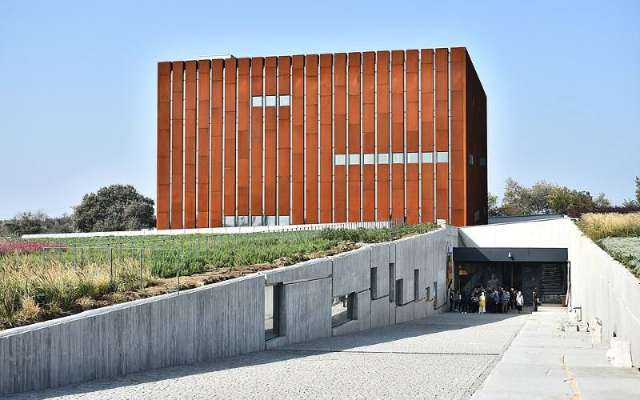
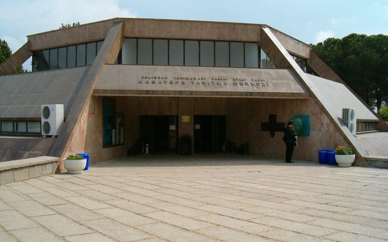
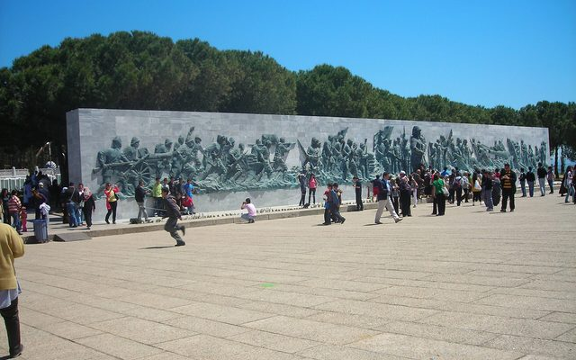

Inicio › Qué ver, provincia por provincia › Çanakkale
La guía Kültür Varlıkları reúne 19 lugares en Çanakkale: 10 museo, 8 yacimiento arqueológico, 1 castillo y edificio histórico. A continuación encontrará lo más destacado, un mapa y la lista completa.
⭐ Lo más destacado

1 · Çanakkale · Yacimiento arqueológicoTroya
Troya se convirtió en la ciudad más famosa de la literatura universal gracias a la Ilíada de Homero.

2 · Çanakkale · MuseoMuseo de Troya
El Museo de Troya, a la entrada del pueblo de Tevfikiye, cerca de la antigua Troya, destaca por su llamativa arquitectura moderna: un cubo que surge del suelo, pensado…

3 · Çanakkale · Yacimiento arqueológicoYacimiento de Alejandría de Tróade
Alejandría de Tróade, cerca del pueblo de Dalyan, junto a Ezine, en la costa del Egeo, fue un gran puerto fundado en época helenística por uno de los generales de…
🗺 En el mapa
📍 Todos los lugares (19)
Museo (10)
Museo de TroyaMuseo Museo de la Guerra de GeliboluMuseo
Museo de la Guerra de GeliboluMuseo Museo del Castillo de KilitbahirMuseo
Museo del Castillo de KilitbahirMuseo Museo del Bastión de NamazgâhMuseo
Museo del Bastión de NamazgâhMuseo Museo Naval de ÇanakkaleMuseoMuseo del Aceite de Oliva de AdatepeMuseoBastión de Hamidiye y Museo de Historia de las Batallas de ÇanakkaleMuseoCentro de Interpretación de la Epopeya de ÇanakkaleMuseoÁrea de recreación de la Media Luna Roja en ÇanakkaleMuseo
Museo Naval de ÇanakkaleMuseoMuseo del Aceite de Oliva de AdatepeMuseoBastión de Hamidiye y Museo de Historia de las Batallas de ÇanakkaleMuseoCentro de Interpretación de la Epopeya de ÇanakkaleMuseoÁrea de recreación de la Media Luna Roja en ÇanakkaleMuseo
Museo de la Guerra de GeliboluMuseo
Centro de Interpretación de KabatepeMuseoMuseo del Castillo de KilitbahirMuseoMuseo del Bastión de NamazgâhMuseoMuseo Naval de ÇanakkaleMuseoMuseo del Aceite de Oliva de AdatepeMuseoBastión de Hamidiye y Museo de Historia de las Batallas de ÇanakkaleMuseoCentro de Interpretación de la Epopeya de ÇanakkaleMuseoÁrea de recreación de la Media Luna Roja en ÇanakkaleMuseoYacimiento arqueológico (8)
TroyaYacimiento arqueológico · UNESCOYacimiento de Alejandría de TróadeYacimiento arqueológico Yacimiento de Apolo EsmintioYacimiento arqueológico
Yacimiento de Apolo EsmintioYacimiento arqueológico Yacimiento de AssosYacimiento arqueológico
Yacimiento de AssosYacimiento arqueológico
Sitio Histórico de GalípoliYacimiento arqueológico Memorial de HellesYacimiento arqueológico
Memorial de HellesYacimiento arqueológico Ciudad antigua de ParioYacimiento arqueológicoNeandriaYacimiento arqueológico
Ciudad antigua de ParioYacimiento arqueológicoNeandriaYacimiento arqueológico